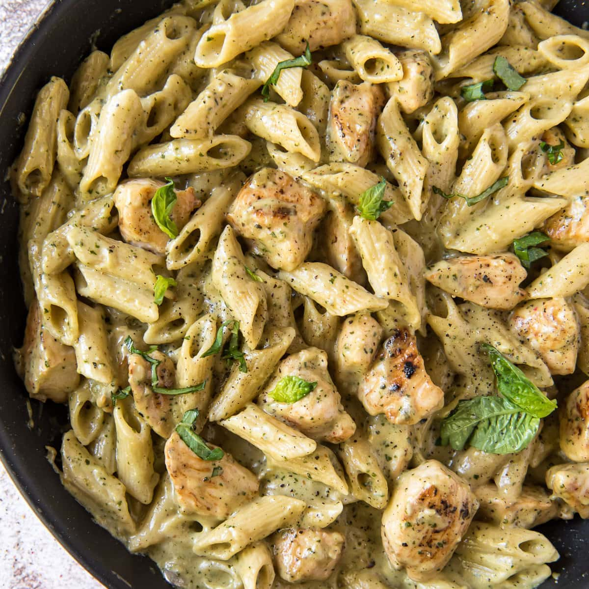

Pesto pasta with chicken

Description
This recipe is a perfect one for a dinner with some friends being very easy to do and having a very delicious classic taste
The pesto give a refreshing taste to the pasta while the chicken makes it more juicy and consistant and gives it en enjoyable taste for the biggest meat eaters
This meal can be made under 30 min and served to 8 persons
Ingredients
- 1 (16 ounce) package bow tie pasta
- 1 teaspoon olive oil
- 2 skinless, boneless chicken breasts, cut into bite-sized pieces
- 1 onion, chopped
- 2 cloves garlic,minced
- 1 pinch crushed red pepper flakes, or to taste
- 1/2 cup pesto sauce
- 1/3 cup oil-packed sun-dried tomatoes, drained and cut into strips
Step by step guide:
- Bring a large pot of lightly salted water to a boil. Add pasta and cook until al dente, 8 to 10 minutes; drain.
- Heat oil in a large skillet over medium heat. Sauté garlic until tender, then stir in chicken and season with red pepper flakes. Cook until chicken is golden and cooked through.
- Combine pasta, chicken, pesto, and sun-dried tomatoes in a large bowl; toss to coat evenly.